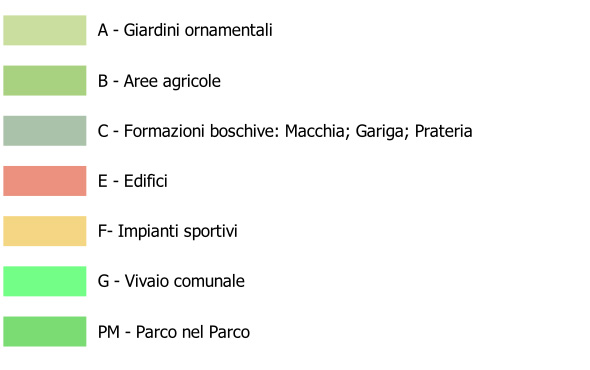
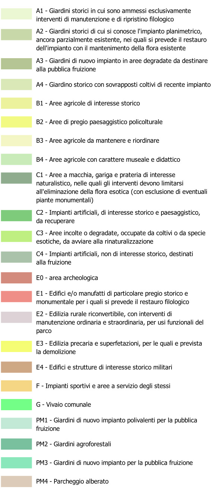

Studio di fattibilità per la rigenerazione funzionale
Il Parco della Favorita, un'area verde di eccezionale valore storico, paesaggistico e naturalistico nella città di Palermo, è oggetto di un ambizioso piano di rigenerazione funzionale. Questo documento di sintesi illustra le linee guida dello Studio di fattibilità, elaborato con l'obiettivo di restituire alla città un parco riqualificato, fruibile e capace di offrire servizi ecosistemici e multifunzionali.

Il Parco della Favorita: un mosaico paesaggistico da preservare
Nato come parco di delizie, campo di produzione agraria e riserva di caccia tra la fine del XVIII e l'inizio del XIX secolo, il Parco della Favorita si estende su una vasta area della Conca d'oro, la fertile pianura che circonda Palermo.
La sua storia plurisecolare ha plasmato un paesaggio unico, un mosaico di giardini storici, monumenti, aree naturali e sistemi agrari tradizionali. Il parco è riconosciuto come zona B della Riserva Naturale Orientata "Monte Pellegrino" e ospita una ricca biodiversità.

Obiettivi dello Studio di fattibilità
Lo Studio di fattibilità mira a potenziare l'uso del Parco, salvaguardare e recuperare i valori storici e ambientali, tutelare l'agricoltura e il suo paesaggio, creare opportunità di formazione ed educazione ambientale, offrire opportunità per il gioco, lo sport e le attività culturali, stabilire un legame più forte con la comunità cittadina e contribuire ad accrescere l'attrattività di Palermo.
Linee guida del Piano
LO Studio di fattibilità si articola in diverse aree strategiche di intervento, ognuna delle quali affronta specifiche problematiche e propone soluzioni innovative per la riqualificazione del Parco.
-
Giardini storici I giardini storici del Parco, tra cui quelli della Casina Cinese, di Villa Niscemi e il giardino all'italiana che collega Piazza Niscemi alla Casina Cinese, costituiscono un patrimonio di inestimabile valore. Il piano prevede il restauro filologico di questi giardini, il recupero dei manufatti lapidei e degli ingrottati, la riconnessione tra la Casina Cinese e il Museo Etnografico Pitrè, e il ripristino delle strutture della Città dei Ragazzi. Questi interventi permetteranno di creare un itinerario che ripercorre la storia dei giardini europei, offrendo ai visitatori un'esperienza culturale unica.
-
Manufatti Borbonici Il Parco è ricco di manufatti storici, testimonianza del suo passato di tenuta reale. Il piano prevede il recupero dei magazzini borbonici adiacenti all'ulivo millenario, con la creazione di servizi funzionali al Parco come aule didattiche, biblioteca, punto di ristoro e servizi igienici. Si propone inoltre il recupero della "Via dell'acqua", con la riattivazione dei manufatti idraulici storici e la valorizzazione del sistema di irrigazione tradizionale.
-
Aree per attività sportive e ricreative Lo Studio di fattibilità riconosce l'importanza delle attività sportive e ricreative all'interno del Parco. Si prevede il mantenimento delle attività equestri, con l'ampliamento a funzioni didattiche e di educazione ambientale, la riqualificazione dei Campi Malvagno per attività sportive, e la creazione di nuovi accessi per facilitare la fruizione di queste aree. Si propone inoltre la creazione di un "Parco nel Parco" nell'ex area Nomadi, con spazi inclusivi, un biolago e la valorizzazione degli agrumeti abbandonati.
-
Tutela ambientale e rinaturalizzazione La tutela ambientale è un elemento centrale dello Studio di fattibilità. Si prevede la tutela e valorizzazione degli alberi monumentali presenti nel Parco, il recupero delle siepi e delle alberate con la rimozione di specie esotiche invasive, l'adozione di piani di gestione per le aree di macchia-foresta mediterranea, garantendo la conservazione e la prevenzione degli incendi, e la rinaturalizzazione delle aree incolte e degradate.
-
Infrastrutture e mobilità sostenibile Il piano prevede il recupero e la realizzazione delle infrastrutture fognarie, idriche, elettriche, antincendio e di videosorveglianza. Si promuoverà l'uso delle energie rinnovabili e si interverrà sulla viabilità interna ed esterna, limitando il traffico veicolare privato e incentivando la mobilità sostenibile con piste ciclabili, navette elettriche e percorsi pedonali.
-
Gestione del parco Lo Studio di fattibilità propone l'individuazione di un organismo di gestione del Parco, che coinvolga enti pubblici, privati e associazioni. La gestione si concentrerà su:
- Accoglienza e promozione
- Salvaguardia e sicurezza
- Relazioni con la comunità urbana
- Mobilità interna
- Pulizia e manutenzione
- Valorizzazione del patrimonio agricolo
- Patrimonio naturalistico e conservazione della biodiversità
- Recupero e valorizzazione del patrimonio immobiliare e dei giardini
Conclusioni
Lo Studio di fattibilità per la rigenerazione funzionale del Parco della Favorita rappresenta un progetto ambizioso e lungimirante, che mira a restituire alla città di Palermo un patrimonio di inestimabile valore.
La realizzazione del piano richiederà un impegno congiunto da parte di diverse entità, ma i benefici che ne deriveranno saranno molteplici: un parco più bello, fruibile e sicuro, un'offerta turistica arricchita, un ambiente più sano e una comunità più coinvolta nella vita del proprio territorio.
Legenga Macro aree - (zoom 13-16)

Legenga Studio di fattibilità (zoom 17-18)
